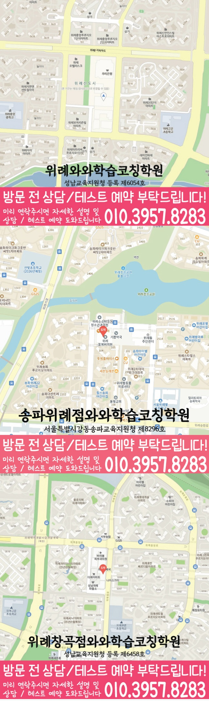

문법 약점, 독해 정확도, 어휘 암기 방식, 오답 유형을 점검해 학생에게 맞는 학습 순서를 먼저 설계합니다.


LOCAL ACADEMY GUIDE
위례 고1 영어학원
송파구 위례동에서 고1 영어학원을 찾는 학생을 위해, 내신 준비부터 수능형 사고력까지 이어지는 학습 흐름을 안내합니다. 와와학습코칭센터 위례점은 단순 문제풀이보다 현재 실력을 정확히 진단하고, 문법·독해· 어휘를 체계적으로 정리해 성적 상승이 누적되도록 수업과 코칭을 함께 진행합니다.
위례동 고1 수업의 핵심 포인트
문법은 적용이 되게, 독해는 근거 중심으로, 어휘는 빈출 주제와 연결해 내신과 서술형에 강해집니다.
수업 후 복습·오답 관리 루틴을 만들고, 다음 시험까지 이어지는 피드백으로 학습이 끊기지 않게 관리합니다.
선생님 특징
학생이 어디에서 막히는지 질문으로 확인하고, 같은 유형을 다시 틀리지 않도록 풀이 과정을 고정합니다.
지문 독해-문항 근거-정답 도출까지 단계별 연습으로, 고1 내신에서 점수가 오르는 답을 만들게 합니다.
수업 진행방식
1. 현재 수준 확인
최근 수행평가/모의고사 흐름, 단원별 취약 문법과 독해 정확도를 바탕으로 약한 파트를 정확히 찾습니다.
2. 문법 정리와 독해 훈련
단순 개념 암기에서 끝내지 않고, 문장 해석·구문·지문 흐름을 훈련해 내신형 문항에 바로 적용합니다.
3. 오답 관리와 학습 피드백
틀린 문제를 이유별로 분류해 ‘다음에 같은 실수를 하지 않는 기준’을 만들고, 복습 계획까지 연결합니다.
고1 영어 학습 전략
문법(기초~적용)
- 고1 필수 문법을 빈출 구조 위주로 정리하고, 해석·문장 구성으로 적용 훈련합니다.
- 문법 문제 오답 원인을 점검해 ‘암기형 실수’를 줄입니다.
독해(근거 중심)
- 지문에서 답의 근거를 찾는 연습으로 정확도를 끌어올립니다.
- 난이도 높은 지문도 시간 안에 읽고 판단하는 루틴을 만듭니다.
어휘·표현(내신형)
- 단원/주제 기반 어휘를 묶어 반복해 암기 효율을 높입니다.
- 독해에서 바로 쓰이는 표현을 문장 속에서 습득합니다.
내신·서술형 대비
- 문항 유형을 분석해 서술형/서술형에 가까운 문항까지 답변 방식으로 준비합니다.
- 시험 전에는 실수 유형과 오답 패턴을 우선 점검합니다.
함께 관리하는 과목(선택 코칭)
고1 시기에 과목 간 공부 시간을 분배하고 복습 루틴을 정착시켜 성적이 흔들리지 않게 돕습니다.
영어 공부가 잘 되도록 학습 태도와 공부 습관을 점검하고, 필요 시 다른 과목의 약점도 함께 조정합니다.
위례동 와와학습코칭센터는 고1 영어의 현재 실력과 내신 목표를 기준으로 학습을 정리하고, 상담을 통해 영어 학습 방향을 자세히 안내드립니다.
센터 위치 안내
주소
경기 성남시 수정구 위례광장로 320 315호
오시는 길
~ 와와학습코칭센터 위례점 위치는 (경기 성남시 수정구 위례광장로 320 315호)입니다.
주요 타깃학교(이외 학교도 수업 가능)
초등 타깃학교
고운초
위례중앙초
송례초
중등 타깃학교
위례한빛중
위례중앙중
송례중
고등 타깃학교
위례한빛고
복정고
문현고
과목별 수강 가능 학년
국어
초3
초4
초5
초6
중1
중2
중3
영어
초3
초4
초5
초6
중1
중2
중3
고1
고2
수학
초3
초4
초5
초6
중1
중2
중3
고1
고2
과학
중1
중2
중3
사회
수강 가능 학년 정보 준비중
학원 등록 정보
수업료는 어떻게 되나요? ✨
A - 서울 (1회 90-100분 수업기준)
| 횟수 | 초등 | 중등 | 고등 |
|---|---|---|---|
| 주 3회 | 249,000 | 266,000 | 299,000 |
| 주 4회 | 319,000 | 341,000 | 384,000 |
| 주 5회 | 389,000 | 416,000 | 469,000 |
B - 서울 외 지점 (1회 90-100분 수업기준)
| 횟수 | 초등 | 중등 | 고등 |
|---|---|---|---|
| 주 3회 | 219,000 | 236,000 | 269,000 |
| 주 4회 | 279,000 | 301,000 | 344,000 |
| 주 5회 | 339,000 | 366,000 | 419,000 |
* 수업료는 지역 및 횟수에 따라 일부 차이가 있을 수 있습니다.
고1 영어 상담부터 오답관리까지 이어지는 흐름
고1 영어는 문법, 독해, 어휘, 학교별 내신 지문 관리가 함께 필요합니다. 상담에서는 현재 점수보다 어떤 부분에서 시간이 오래 걸리고 반복 실수가 생기는지 먼저 확인합니다.
현재 수준 확인
학교 진도, 최근 영어 시험 결과, 어려운 문법 단원, 독해 속도와 어휘 암기 습관을 확인합니다.
문법·독해 진단
문장 구조 이해, 구문 해석, 지문 근거 찾기, 선택지 판단 과정을 나누어 약점을 진단합니다.
플래너 실행 점검
어휘 암기, 지문 복습, 문법 적용 문제, 오답 재풀이를 주간 계획으로 나누고 실행 여부를 확인합니다.
오답 원인 분석
틀린 문제를 어휘 부족, 해석 오류, 문법 혼동, 근거 누락으로 분류해 다음 수업과 복습에 연결합니다.
SEO · GEO SUMMARY
위례 고1 영어학원 핵심 요약
서울 송파구 위례에서 위례 고1 영어학원 정보를 찾는 학부모를 위해, 기존 페이지의 영어·수학 학습 안내를 질문에 바로 답할 수 있는 형태로 정리했습니다.
페이지 경로와 기존 안내 내용을 기준으로 지역명을 명확하게 연결했습니다.
개념 확인, 문제 풀이, 오답 재학습, 시험 전 복습 순서를 함께 봅니다.
학년별 현재 수준과 시험 준비 흐름에 맞춰 관리 기준을 조정합니다.
ANSWER READY
위례 고1 영어학원를 알아볼 때 바로 확인할 내용
위례 고1 영어학원 페이지는 단순 소개보다 “어떤 학생에게 필요한지, 상담 때 무엇을 확인하는지, 학부모가 어떤 기준으로 비교하면 좋은지”를 한눈에 이해할 수 있도록 구성했습니다.
계획은 세우지만 실행이 흔들리거나, 같은 유형의 오답이 반복되는 학생에게 적합합니다.
최근 학습 흐름, 현재 교재, 시험지, 숙제 수행 정도를 바탕으로 필요한 관리 순서를 정합니다.
진단 → 계획 → 수업 확인 → 오답 재학습 → 학부모 피드백 흐름으로 이어지도록 정리합니다.
CONSULTING CHECKLIST
위례 고1 영어학원 상담 전 체크리스트
실제 상담 전 아래 항목을 확인하면 학생에게 필요한 영어·수학 학습 방향을 더 빠르게 정리할 수 있습니다.
- 현재 교재사용 중인 교재와 진도를 확인합니다.
- 최근 시험지점수보다 반복되는 오답 유형을 확인합니다.
- 공부 시간평소 공부 시간과 숙제 수행 정도를 봅니다.
- 상담 목표성적, 습관, 오답, 시험 대비 중 우선순위를 정합니다.
PARENT FAQ
위례 고1 영어학원 FAQ
위례 고1 영어학원 상담 전 학부모님이 자주 확인하는 기준을 정리했습니다.
Q위례 고1 영어학원 상담은 어떤 순서로 진행되나요?
위례 고1 영어학원 상담은 현재 교재와 학습 습관을 먼저 확인한 뒤, 영어 학습에서 보완할 부분을 진단하고 플래너 관리와 오답 재학습 순서로 정리합니다.
Q위례에서 영어수학 학원을 알아볼 때 어떤 기준을 보면 좋나요?
위례에서 학원을 비교할 때는 수업 설명만 보기보다 학생별 진단, 주간 계획 확인, 오답 재점검, 시험 전 복습 흐름이 실제로 이어지는지 확인하는 것이 좋습니다.
Q상담 전에 어떤 자료를 준비하면 좋나요?
최근 시험지, 현재 사용 중인 교재, 숙제 수행 정도, 자주 틀리는 단원, 평소 공부 시간을 함께 준비하면 필요한 관리 방향을 더 구체적으로 잡을 수 있습니다.
Q고등반 학생에게는 어떤 관리가 필요한가요?
고등반은 개념 이해와 문제 풀이의 연결, 시험 전 복습 순서, 반복되는 오답 유형을 함께 봐야 합니다. 학생 상황에 맞춰 무리 없는 관리 기준을 정리합니다.
Q학부모는 어떤 내용을 확인할 수 있나요?
수업 진행 상황, 플래너 실행 여부, 반복 오답, 다음 관리 포인트를 중심으로 학생의 학습 흐름을 이해하기 쉽게 확인할 수 있습니다.
PARENT REVIEWS
위례 고1 영어학원 학부모 후기
위례 고1 영어학원 상담과 학습관리에서 자주 언급되는 만족 포인트를 정리했습니다.
★★★★★
위례 고1 영어학원 상담에서 아이가 어디에서 막히는지 차분하게 정리해줘서 관리 방향을 잡기 쉬웠습니다.
학부모 후기★★★★★
위례 기준으로 상담 내용을 확인해보니 플래너와 오답 관리가 함께 설명되어 안심이 됐습니다.
학부모 후기★★★★★
영어 공부를 단순히 많이 시키는 방식이 아니라 부족한 부분부터 확인하는 점이 좋았습니다.
학부모 후기★★★★★
시험 전에는 복습 순서와 자주 틀리는 문제를 따로 확인해줘서 아이가 무엇을 해야 할지 알게 됐습니다.
학부모 후기★★★★★
학부모 입장에서도 수업 후 어떤 부분을 봐야 하는지 설명이 분명해서 관리 흐름을 이해하기 좋았습니다.
학부모 후기★★★★☆
처음 상담 때부터 아이의 공부 습관을 먼저 살펴보고 필요한 부분을 차근차근 잡아줘서 도움이 됐습니다.
학부모 후기STUDY GUIDE
위례 고1 영어 학원 학습관리 포인트
위례 고1 영어 학원을 찾는 학생이라면 고1 과정에서 필요한 영어 학습 목표를 먼저 정리하는 것이 좋습니다. 현재 학교 진도와 최근 시험 결과, 숙제 수행 습관을 함께 보면 상담 방향이 훨씬 구체적입니다.
시험 직전에 한꺼번에 외우기보다 지문별 핵심 어휘와 표현을 주간 단위로 누적 관리합니다.
감으로 해석하지 않고 주어·동사·수식어 구조를 표시해 독해 근거를 남기는 습관을 만듭니다.
본문 암기에서 끝내지 않고 빈칸, 순서, 어법, 서술형으로 바뀔 수 있는 문장을 따로 정리합니다.
서울 송파구 위례 상담 전 체크
최근 시험지, 학교 진도, 어려운 단원, 숙제 수행 정도를 함께 정리해두면 상담에서 학생에게 필요한 학습 순서를 더 빠르게 잡을 수 있습니다.
함께 보면 좋은 학습가이드
현재 페이지의 학년·과목과 연결되는 정보성 콘텐츠입니다. 지역 페이지와 함께 읽으면 상담 준비와 학습 계획을 더 구체화할 수 있습니다.
위례 관련 학원 페이지
현재 보고 있는 지역 안에서 센터 안내와 학년·과목별 상세 페이지로 바로 이동할 수 있습니다.
위례 고1 영어학원 상담이 필요하신가요?
고1 영어의 현재 문법 이해도, 독해 속도, 어휘 습관, 내신 대비 계획을 정리해 상담문의로 남겨주시면 학습 방향을 더 구체적으로 확인할 수 있습니다.
상담문의LOCAL DETAIL LINKS
위례 관련 학습 페이지 바로가기
같은 동네 안에서 함께 보면 좋은 학년·과목별 학습 안내 페이지를 정리했습니다.
동네 학원
위례학원 영어수학 전문학원
같은 동네의 기본 영어수학 학원 안내로 이동합니다.
연관 과정 위례 고1 수학학원같은 동네의 다른 학년·과목 안내도 함께 확인할 수 있습니다.
연관 과정 위례 고2 수학학원같은 동네의 다른 학년·과목 안내도 함께 확인할 수 있습니다.
연관 과정 위례 고2 영어학원같은 동네의 다른 학년·과목 안내도 함께 확인할 수 있습니다.
연관 과정 위례 중2 수학학원같은 동네의 다른 학년·과목 안내도 함께 확인할 수 있습니다.
연관 과정 위례 중2 영어학원같은 동네의 다른 학년·과목 안내도 함께 확인할 수 있습니다.
연관 과정 위례 중3 수학학원같은 동네의 다른 학년·과목 안내도 함께 확인할 수 있습니다.
연관 과정 위례 중3 영어학원같은 동네의 다른 학년·과목 안내도 함께 확인할 수 있습니다.